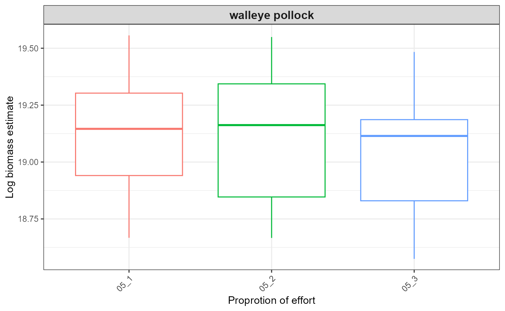
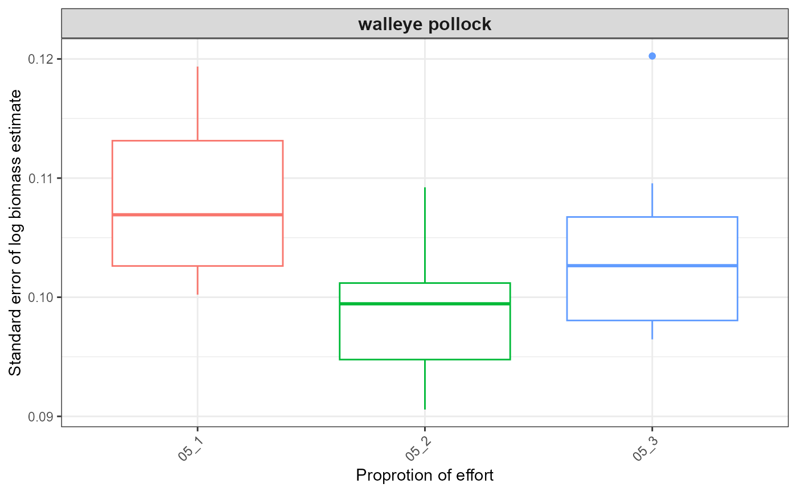
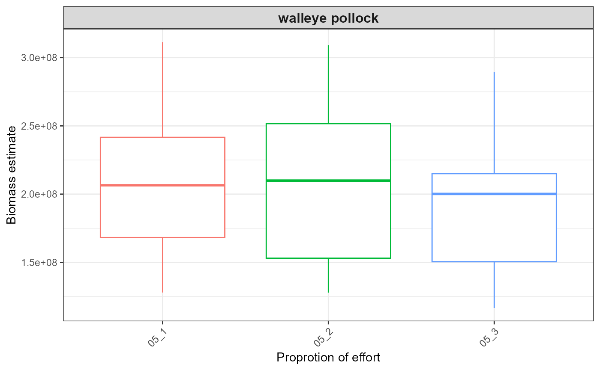
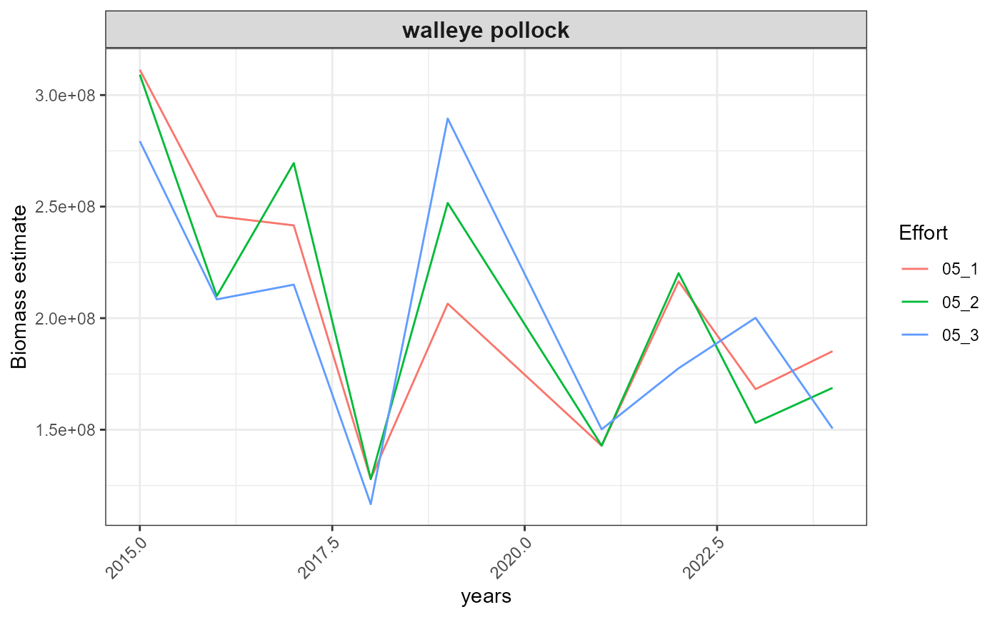

afsc-ebs.Rmd
#get rid of memory limits
options(future.globals.maxSize = 1 * 1024^4) # Allow up to 1 TB for globals
# Set directories --------------------------------------------------------------
library(here)
#> here() starts at Z:/Projects/surveyresamplr_general/surveyresamplr
wd <- paste0(here::here(),"/vignettes/")
dir_out <- paste0(wd, "output/")
crs_latlon <- "+proj=longlat +datum=WGS84" # decimal degrees
# Install Libraries ------------------------------------------------------------
# Here we list all the packages we will need for this whole process
# We'll also use this in our works cited page.
PKG <- c(
"surveyresamplr",
# tidyverse
"dplyr",
"magrittr",
"tidyr",
"viridis",
"ggplot2",
"tibble",
"janitor",
"data.table",
# parallelizing
"forcats",
"purrr",
"furrr",
"doParallel",
# sampling
"sampling",
# modeling
"arrow",
"future.apply",
"future.callr",
"sdmTMB", # install.packages("remotes"",; remotes::install_github("pbs-assess/sdmTMBextra", dependencies = TRUE",
"Matrix",
"MASS",
"cluster",
"TMB",
"INLA"
)
pkg_install <- function(p){
if(!require(p, character.only = TRUE)) {
install.packages(p)
}
require(p, character.only = TRUE)
}
base::lapply(unique(PKG), pkg_install)
#> Loading required package: surveyresamplr
#> Loading required package: dplyr
#>
#> Attaching package: 'dplyr'
#> The following objects are masked from 'package:stats':
#>
#> filter, lag
#> The following objects are masked from 'package:base':
#>
#> intersect, setdiff, setequal, union
#> Loading required package: magrittr
#> Loading required package: tidyr
#>
#> Attaching package: 'tidyr'
#> The following object is masked from 'package:magrittr':
#>
#> extract
#> Loading required package: viridis
#> Loading required package: viridisLite
#> Loading required package: ggplot2
#> Loading required package: tibble
#> Loading required package: janitor
#>
#> Attaching package: 'janitor'
#> The following objects are masked from 'package:stats':
#>
#> chisq.test, fisher.test
#> Loading required package: data.table
#>
#> Attaching package: 'data.table'
#> The following objects are masked from 'package:dplyr':
#>
#> between, first, last
#> Loading required package: forcats
#> Loading required package: purrr
#>
#> Attaching package: 'purrr'
#> The following object is masked from 'package:data.table':
#>
#> transpose
#> The following object is masked from 'package:magrittr':
#>
#> set_names
#> Loading required package: furrr
#> Loading required package: future
#> Loading required package: doParallel
#> Loading required package: foreach
#>
#> Attaching package: 'foreach'
#> The following objects are masked from 'package:purrr':
#>
#> accumulate, when
#> Loading required package: iterators
#> Loading required package: parallel
#> Loading required package: sampling
#>
#> Attaching package: 'sampling'
#> The following object is masked from 'package:future':
#>
#> cluster
#> Loading required package: arrow
#>
#> Attaching package: 'arrow'
#> The following object is masked from 'package:magrittr':
#>
#> is_in
#> The following object is masked from 'package:utils':
#>
#> timestamp
#> Loading required package: future.apply
#> Loading required package: future.callr
#> Loading required package: sdmTMB
#> Loading required package: Matrix
#>
#> Attaching package: 'Matrix'
#> The following objects are masked from 'package:tidyr':
#>
#> expand, pack, unpack
#> Loading required package: MASS
#>
#> Attaching package: 'MASS'
#> The following object is masked from 'package:dplyr':
#>
#> select
#> Loading required package: cluster
#> Loading required package: TMB
#> Loading required package: INLA
#> This is INLA_24.12.11 built 2024-12-11 19:58:26 UTC.
#> - See www.r-inla.org/contact-us for how to get help.
#> - List available models/likelihoods/etc with inla.list.models()
#> - Use inla.doc(<NAME>) to access documentation
#> [[1]]
#> [1] TRUE
#>
#> [[2]]
#> [1] TRUE
#>
#> [[3]]
#> [1] TRUE
#>
#> [[4]]
#> [1] TRUE
#>
#> [[5]]
#> [1] TRUE
#>
#> [[6]]
#> [1] TRUE
#>
#> [[7]]
#> [1] TRUE
#>
#> [[8]]
#> [1] TRUE
#>
#> [[9]]
#> [1] TRUE
#>
#> [[10]]
#> [1] TRUE
#>
#> [[11]]
#> [1] TRUE
#>
#> [[12]]
#> [1] TRUE
#>
#> [[13]]
#> [1] TRUE
#>
#> [[14]]
#> [1] TRUE
#>
#> [[15]]
#> [1] TRUE
#>
#> [[16]]
#> [1] TRUE
#>
#> [[17]]
#> [1] TRUE
#>
#> [[18]]
#> [1] TRUE
#>
#> [[19]]
#> [1] TRUE
#>
#> [[20]]
#> [1] TRUE
#>
#> [[21]]
#> [1] TRUE
#>
#> [[22]]
#> [1] TRUE
#>
#> [[23]]
#> [1] TRUE
### Define study species -------------------------------------------------------
spp_list <- data.frame(
srvy = "EBS",
common_name = c("walleye pollock", "snow crab", "Pacific cod",
"red king crab", "blue king crab",
"yellowfin sole", "Pacific halibut",
"Alaska plaice", "flathead sole", "northern rock sole", "arrowtooth flounder"),
species_code = as.character(c(21740, 68580, 21720,
69322, 69323,
10210, 10120,
10285, 10130, 10261, 10110)),
filter_lat_lt = NA,
filter_lat_gt = NA,
filter_depth = NA,
model_fn = "total_catch_wt_kg ~ 0 + factor(year) + bottom_temperature_c",
model_family = "delta_gamma",
model_anisotropy = TRUE,
model_spatiotemporal = c(c("iid, iid"))
) %>%
dplyr::mutate(
file_name = gsub(pattern = " ", replacement = "_", x = (tolower(common_name))) )
### Load survey data -----------------------------------------------------------
# source(paste0(wd, "code/data_dl_ak.r"))
load(file = paste0(wd, "/data/noaa_afsc_catch.rda"))
catch <- noaa_afsc_catch %>% dplyr::filter(srvy == "EBS")
### Load grid data -------------------------------------------------------------
load(paste0(wd, "grids/noaa_afsc_ebs_pred_grid_depth.rdata"), verbose = TRUE)
#### Add temperature: Coldpool temperature data
# Data that varies over space and time (bottom temperature)
# Here, bottom temperature, and thereby the cold pool extent, have been show to drive the distribution of many species. This is especially true for walleye pollock.
# For this we are going to lean on our in-house prepared validated and pre-prepared [{coldpool} R package](https://github.com/afsc-gap-products/coldpool) (S. Rohan, L. Barnett, and N. Charriere). This data interpolates over the whole area of the survey so there are no missing data.
grid_yrs <-
dplyr::bind_cols(
pred_grid_depth[,c("longitude_dd", "latitude_dd", "depth_m")],
terra::unwrap(coldpool::ebs_bottom_temperature) %>%
terra::project(crs_latlon) %>%
terra::extract(pred_grid_depth[,c("longitude_dd", "latitude_dd")]))
grid_yrs <- grid_yrs %>%
tidyr::pivot_longer(
names_to = "year",
values_to = "bottom_temperature_c",
cols = names(grid_yrs_temperature)[4:ncol(grid_yrs_temperature)])
save(grid_yrs_depth_temperature, file = paste0("grids/grid_yr_temperature/noaa_afsc_ebs_pred_grid_depth_temperature.rdata"))
# # test you extracted correctkt
# ggplot(data = grid_yrs %>%
# dplyr::filter(year %in% c(2022:2024)),
# mapping = ggplot2::aes(x = longitude_dd, y = latitude_dd, color = bottom_temperature_c)) +
# geom_point() +
# facet_wrap(facets = "year")
### Variables ------------------------------------------------------------------
srvy <- "EBS"
seq_from = 0.2
seq_to = 1.0
seq_by = 0.2
tot_dataframes = 13
replicate_num <- 3
### Run ------------------------------------------------------------------------
sink(file = paste0(dir_out, srvy, "_", Sys.Date(), "_logfile.txt"), append = FALSE, split = TRUE) # for screen and log
map(
1:nrow(spp_list),
~ clean_and_resample(spp_list[.x,],
catch, seq_from, seq_to, seq_by,
tot_dataframes, replicate_num, grid_yrs, dir_out, test = TRUE))
sink()
### Plot indices ---------------------------------------------------------------
srvy <- "EBS"
plot_results(srvy = srvy, dir_out = dir_out)
#> $plots
#> $plots$index_boxplot_log_biomass
#>
#> $plots$index_boxplot_log_biomass_SE
#>
#> $plots$index_boxplot_biomass
#>
#> $plots$index_timeseries_biomass
#>
#>
#> $tables
#> $tables$fit_df
#> X.5 X.4 X.3 X.2 X.1 X srvy common_name file_name
#> 1 1 1 1 1 1 1 EBS walleye pollock walleye_pollock_test
#> 2 2 2 2 2 2 2 EBS walleye pollock walleye_pollock_test
#> 3 3 3 3 3 3 3 EBS walleye pollock walleye_pollock_test
#> 4 4 4 4 4 4 4 EBS walleye pollock walleye_pollock_test
#> 5 5 5 5 5 5 5 EBS walleye pollock walleye_pollock_test
#> 6 6 6 6 6 6 6 EBS walleye pollock walleye_pollock_test
#> 7 7 7 7 7 7 7 EBS walleye pollock walleye_pollock_test
#> 8 8 8 8 8 8 8 EBS walleye pollock walleye_pollock_test
#> 9 9 9 9 9 9 9 EBS walleye pollock walleye_pollock_test
#> 10 10 10 10 10 10 NA EBS walleye pollock walleye_pollock_test
#> 11 11 11 11 11 11 NA EBS walleye pollock walleye_pollock_test
#> 12 12 12 12 12 12 NA EBS walleye pollock walleye_pollock_test
#> 13 13 13 13 13 13 NA EBS walleye pollock walleye_pollock_test
#> 14 14 14 14 14 14 NA EBS walleye pollock walleye_pollock_test
#> 15 15 15 15 15 15 NA EBS walleye pollock walleye_pollock_test
#> 16 16 16 16 16 16 NA EBS walleye pollock walleye_pollock_test
#> 17 17 17 17 17 17 NA EBS walleye pollock walleye_pollock_test
#> 18 18 18 18 18 18 NA EBS walleye pollock walleye_pollock_test
#> 19 19 19 19 19 NA NA EBS walleye pollock walleye_pollock_test
#> 20 20 20 20 20 NA NA EBS walleye pollock walleye_pollock_test
#> 21 21 21 21 21 NA NA EBS walleye pollock walleye_pollock_test
#> 22 22 22 22 22 NA NA EBS walleye pollock walleye_pollock_test
#> 23 23 23 23 23 NA NA EBS walleye pollock walleye_pollock_test
#> 24 24 24 24 24 NA NA EBS walleye pollock walleye_pollock_test
#> 25 25 25 25 25 NA NA EBS walleye pollock walleye_pollock_test
#> 26 26 26 26 26 NA NA EBS walleye pollock walleye_pollock_test
#> 27 27 27 27 27 NA NA EBS walleye pollock walleye_pollock_test
#> 28 28 28 28 NA NA NA EBS walleye pollock simple_walleye_pollock
#> 29 29 29 29 NA NA NA EBS walleye pollock simple_walleye_pollock
#> 30 30 30 30 NA NA NA EBS walleye pollock simple_walleye_pollock
#> 31 31 31 31 NA NA NA EBS walleye pollock simple_walleye_pollock
#> 32 32 32 32 NA NA NA EBS walleye pollock simple_walleye_pollock
#> 33 33 33 33 NA NA NA EBS walleye pollock simple_walleye_pollock
#> 34 34 34 34 NA NA NA EBS walleye pollock simple_walleye_pollock
#> 35 35 35 35 NA NA NA EBS walleye pollock simple_walleye_pollock
#> 36 36 36 36 NA NA NA EBS walleye pollock simple_walleye_pollock
#> 37 37 37 NA NA NA NA EBS walleye pollock simple_walleye_pollock
#> 38 38 38 NA NA NA NA EBS walleye pollock simple_walleye_pollock
#> 39 39 39 NA NA NA NA EBS walleye pollock simple_walleye_pollock
#> 40 40 40 NA NA NA NA EBS walleye pollock simple_walleye_pollock
#> 41 41 41 NA NA NA NA EBS walleye pollock simple_walleye_pollock
#> 42 42 42 NA NA NA NA EBS walleye pollock simple_walleye_pollock
#> 43 43 43 NA NA NA NA EBS walleye pollock simple_walleye_pollock
#> 44 44 44 NA NA NA NA EBS walleye pollock simple_walleye_pollock
#> 45 45 45 NA NA NA NA EBS walleye pollock simple_walleye_pollock
#> 46 46 NA NA NA NA NA EBS walleye pollock simple_walleye_pollock
#> 47 47 NA NA NA NA NA EBS walleye pollock simple_walleye_pollock
#> 48 48 NA NA NA NA NA EBS walleye pollock simple_walleye_pollock
#> 49 49 NA NA NA NA NA EBS walleye pollock simple_walleye_pollock
#> 50 50 NA NA NA NA NA EBS walleye pollock simple_walleye_pollock
#> 51 51 NA NA NA NA NA EBS walleye pollock simple_walleye_pollock
#> 52 52 NA NA NA NA NA EBS walleye pollock simple_walleye_pollock
#> 53 53 NA NA NA NA NA EBS walleye pollock simple_walleye_pollock
#> 54 54 NA NA NA NA NA EBS walleye pollock simple_walleye_pollock
#> species_code filter_lat_lt filter_lat_gt filter_depth
#> 1 21740 NA NA NA
#> 2 21740 NA NA NA
#> 3 21740 NA NA NA
#> 4 21740 NA NA NA
#> 5 21740 NA NA NA
#> 6 21740 NA NA NA
#> 7 21740 NA NA NA
#> 8 21740 NA NA NA
#> 9 21740 NA NA NA
#> 10 21740 NA NA NA
#> 11 21740 NA NA NA
#> 12 21740 NA NA NA
#> 13 21740 NA NA NA
#> 14 21740 NA NA NA
#> 15 21740 NA NA NA
#> 16 21740 NA NA NA
#> 17 21740 NA NA NA
#> 18 21740 NA NA NA
#> 19 21740 NA NA NA
#> 20 21740 NA NA NA
#> 21 21740 NA NA NA
#> 22 21740 NA NA NA
#> 23 21740 NA NA NA
#> 24 21740 NA NA NA
#> 25 21740 NA NA NA
#> 26 21740 NA NA NA
#> 27 21740 NA NA NA
#> 28 21740 NA NA NA
#> 29 21740 NA NA NA
#> 30 21740 NA NA NA
#> 31 21740 NA NA NA
#> 32 21740 NA NA NA
#> 33 21740 NA NA NA
#> 34 21740 NA NA NA
#> 35 21740 NA NA NA
#> 36 21740 NA NA NA
#> 37 21740 NA NA NA
#> 38 21740 NA NA NA
#> 39 21740 NA NA NA
#> 40 21740 NA NA NA
#> 41 21740 NA NA NA
#> 42 21740 NA NA NA
#> 43 21740 NA NA NA
#> 44 21740 NA NA NA
#> 45 21740 NA NA NA
#> 46 21740 NA NA NA
#> 47 21740 NA NA NA
#> 48 21740 NA NA NA
#> 49 21740 NA NA NA
#> 50 21740 NA NA NA
#> 51 21740 NA NA NA
#> 52 21740 NA NA NA
#> 53 21740 NA NA NA
#> 54 21740 NA NA NA
#> model_fn model_family model_anisotropy
#> 1 total_catch_wt_kg ~ 0 + factor(year) delta_gamma TRUE
#> 2 total_catch_wt_kg ~ 0 + factor(year) delta_gamma TRUE
#> 3 total_catch_wt_kg ~ 0 + factor(year) delta_gamma TRUE
#> 4 total_catch_wt_kg ~ 0 + factor(year) delta_gamma TRUE
#> 5 total_catch_wt_kg ~ 0 + factor(year) delta_gamma TRUE
#> 6 total_catch_wt_kg ~ 0 + factor(year) delta_gamma TRUE
#> 7 total_catch_wt_kg ~ 0 + factor(year) delta_gamma TRUE
#> 8 total_catch_wt_kg ~ 0 + factor(year) delta_gamma TRUE
#> 9 total_catch_wt_kg ~ 0 + factor(year) delta_gamma TRUE
#> 10 total_catch_wt_kg ~ 0 + factor(year) delta_gamma TRUE
#> 11 total_catch_wt_kg ~ 0 + factor(year) delta_gamma TRUE
#> 12 total_catch_wt_kg ~ 0 + factor(year) delta_gamma TRUE
#> 13 total_catch_wt_kg ~ 0 + factor(year) delta_gamma TRUE
#> 14 total_catch_wt_kg ~ 0 + factor(year) delta_gamma TRUE
#> 15 total_catch_wt_kg ~ 0 + factor(year) delta_gamma TRUE
#> 16 total_catch_wt_kg ~ 0 + factor(year) delta_gamma TRUE
#> 17 total_catch_wt_kg ~ 0 + factor(year) delta_gamma TRUE
#> 18 total_catch_wt_kg ~ 0 + factor(year) delta_gamma TRUE
#> 19 total_catch_wt_kg ~ 0 + factor(year) delta_gamma TRUE
#> 20 total_catch_wt_kg ~ 0 + factor(year) delta_gamma TRUE
#> 21 total_catch_wt_kg ~ 0 + factor(year) delta_gamma TRUE
#> 22 total_catch_wt_kg ~ 0 + factor(year) delta_gamma TRUE
#> 23 total_catch_wt_kg ~ 0 + factor(year) delta_gamma TRUE
#> 24 total_catch_wt_kg ~ 0 + factor(year) delta_gamma TRUE
#> 25 total_catch_wt_kg ~ 0 + factor(year) delta_gamma TRUE
#> 26 total_catch_wt_kg ~ 0 + factor(year) delta_gamma TRUE
#> 27 total_catch_wt_kg ~ 0 + factor(year) delta_gamma TRUE
#> 28 total_catch_wt_kg ~ 0 + factor(year) delta_gamma TRUE
#> 29 total_catch_wt_kg ~ 0 + factor(year) delta_gamma TRUE
#> 30 total_catch_wt_kg ~ 0 + factor(year) delta_gamma TRUE
#> 31 total_catch_wt_kg ~ 0 + factor(year) delta_gamma TRUE
#> 32 total_catch_wt_kg ~ 0 + factor(year) delta_gamma TRUE
#> 33 total_catch_wt_kg ~ 0 + factor(year) delta_gamma TRUE
#> 34 total_catch_wt_kg ~ 0 + factor(year) delta_gamma TRUE
#> 35 total_catch_wt_kg ~ 0 + factor(year) delta_gamma TRUE
#> 36 total_catch_wt_kg ~ 0 + factor(year) delta_gamma TRUE
#> 37 total_catch_wt_kg ~ 0 + factor(year) delta_gamma TRUE
#> 38 total_catch_wt_kg ~ 0 + factor(year) delta_gamma TRUE
#> 39 total_catch_wt_kg ~ 0 + factor(year) delta_gamma TRUE
#> 40 total_catch_wt_kg ~ 0 + factor(year) delta_gamma TRUE
#> 41 total_catch_wt_kg ~ 0 + factor(year) delta_gamma TRUE
#> 42 total_catch_wt_kg ~ 0 + factor(year) delta_gamma TRUE
#> 43 total_catch_wt_kg ~ 0 + factor(year) delta_gamma TRUE
#> 44 total_catch_wt_kg ~ 0 + factor(year) delta_gamma TRUE
#> 45 total_catch_wt_kg ~ 0 + factor(year) delta_gamma TRUE
#> 46 total_catch_wt_kg ~ 0 + factor(year) delta_gamma TRUE
#> 47 total_catch_wt_kg ~ 0 + factor(year) delta_gamma TRUE
#> 48 total_catch_wt_kg ~ 0 + factor(year) delta_gamma TRUE
#> 49 total_catch_wt_kg ~ 0 + factor(year) delta_gamma TRUE
#> 50 total_catch_wt_kg ~ 0 + factor(year) delta_gamma TRUE
#> 51 total_catch_wt_kg ~ 0 + factor(year) delta_gamma TRUE
#> 52 total_catch_wt_kg ~ 0 + factor(year) delta_gamma TRUE
#> 53 total_catch_wt_kg ~ 0 + factor(year) delta_gamma TRUE
#> 54 total_catch_wt_kg ~ 0 + factor(year) delta_gamma TRUE
#> model_spatiotemporal effort term estimate std.error conf.low
#> 1 iid, iid 05_1 factor(year)2015 19.77117 1391.1234 -2706.7805
#> 2 iid, iid 05_1 factor(year)2016 19.90634 1384.9903 -2694.6247
#> 3 iid, iid 05_1 factor(year)2017 19.86007 1340.3207 -2607.1202
#> 4 iid, iid 05_1 factor(year)2018 19.80071 1454.1672 -2830.3147
#> 5 iid, iid 05_1 factor(year)2019 20.11844 1272.4660 -2473.8691
#> 6 iid, iid 05_1 factor(year)2021 19.71943 1278.2534 -2485.6112
#> 7 iid, iid 05_1 factor(year)2022 19.73432 774.5355 -1498.3273
#> 8 iid, iid 05_1 factor(year)2023 19.82571 1362.2159 -2650.0683
#> 9 iid, iid 05_1 factor(year)2024 19.46264 1249.7802 -2430.0615
#> 10 iid, iid 05_2 factor(year)2015 19.07575 312.9058 -594.2084
#> 11 iid, iid 05_2 factor(year)2016 19.07575 NaN NaN
#> 12 iid, iid 05_2 factor(year)2017 19.07858 NaN NaN
#> 13 iid, iid 05_2 factor(year)2018 19.08351 NaN NaN
#> 14 iid, iid 05_2 factor(year)2019 19.08117 839.2988 -1625.9142
#> 15 iid, iid 05_2 factor(year)2021 19.08117 756.6909 -1464.0057
#> 16 iid, iid 05_2 factor(year)2022 19.07575 904.6763 -1754.0573
#> 17 iid, iid 05_2 factor(year)2023 19.08117 971.2195 -1884.4740
#> 18 iid, iid 05_2 factor(year)2024 19.09158 632.0313 -1219.6671
#> 19 iid, iid 05_3 factor(year)2015 19.19664 988.8261 -1918.8668
#> 20 iid, iid 05_3 factor(year)2016 19.19323 868.0186 -1682.0919
#> 21 iid, iid 05_3 factor(year)2017 19.19323 960.7723 -1863.8859
#> 22 iid, iid 05_3 factor(year)2018 19.19664 952.9160 -1848.4845
#> 23 iid, iid 05_3 factor(year)2019 19.19323 690.2552 -1333.6820
#> 24 iid, iid 05_3 factor(year)2021 19.19323 679.4069 -1312.4197
#> 25 iid, iid 05_3 factor(year)2022 19.19664 894.0415 -1733.0926
#> 26 iid, iid 05_3 factor(year)2023 19.19323 NaN NaN
#> 27 iid, iid 05_3 factor(year)2024 19.15037 984.2265 -1909.8981
#> 28 iid, iid 05_1 factor(year)2015 19.77117 1391.1234 -2706.7805
#> 29 iid, iid 05_1 factor(year)2016 19.90634 1384.9903 -2694.6247
#> 30 iid, iid 05_1 factor(year)2017 19.86007 1340.3207 -2607.1202
#> 31 iid, iid 05_1 factor(year)2018 19.80071 1454.1672 -2830.3147
#> 32 iid, iid 05_1 factor(year)2019 20.11844 1272.4660 -2473.8691
#> 33 iid, iid 05_1 factor(year)2021 19.71943 1278.2534 -2485.6112
#> 34 iid, iid 05_1 factor(year)2022 19.73432 774.5355 -1498.3273
#> 35 iid, iid 05_1 factor(year)2023 19.82571 1362.2159 -2650.0683
#> 36 iid, iid 05_1 factor(year)2024 19.46264 1249.7802 -2430.0615
#> 37 iid, iid 05_2 factor(year)2015 19.07575 312.9058 -594.2084
#> 38 iid, iid 05_2 factor(year)2016 19.07575 NaN NaN
#> 39 iid, iid 05_2 factor(year)2017 19.07858 NaN NaN
#> 40 iid, iid 05_2 factor(year)2018 19.08351 NaN NaN
#> 41 iid, iid 05_2 factor(year)2019 19.08117 839.2988 -1625.9142
#> 42 iid, iid 05_2 factor(year)2021 19.08117 756.6909 -1464.0057
#> 43 iid, iid 05_2 factor(year)2022 19.07575 904.6763 -1754.0573
#> 44 iid, iid 05_2 factor(year)2023 19.08117 971.2195 -1884.4740
#> 45 iid, iid 05_2 factor(year)2024 19.09158 632.0313 -1219.6671
#> 46 iid, iid 05_3 factor(year)2015 19.19664 988.8261 -1918.8668
#> 47 iid, iid 05_3 factor(year)2016 19.19323 868.0186 -1682.0919
#> 48 iid, iid 05_3 factor(year)2017 19.19323 960.7723 -1863.8859
#> 49 iid, iid 05_3 factor(year)2018 19.19664 952.9160 -1848.4845
#> 50 iid, iid 05_3 factor(year)2019 19.19323 690.2552 -1333.6820
#> 51 iid, iid 05_3 factor(year)2021 19.19323 679.4069 -1312.4197
#> 52 iid, iid 05_3 factor(year)2022 19.19664 894.0415 -1733.0926
#> 53 iid, iid 05_3 factor(year)2023 19.19323 NaN NaN
#> 54 iid, iid 05_3 factor(year)2024 19.15037 984.2265 -1909.8981
#> conf.high
#> 1 2746.3229
#> 2 2734.4374
#> 3 2646.8403
#> 4 2869.9161
#> 5 2514.1060
#> 6 2525.0501
#> 7 1537.7960
#> 8 2689.7197
#> 9 2468.9868
#> 10 632.3599
#> 11 NaN
#> 12 NaN
#> 13 NaN
#> 14 1664.0766
#> 15 1502.1680
#> 16 1792.2088
#> 17 1922.6364
#> 18 1257.8502
#> 19 1957.2601
#> 20 1720.4784
#> 21 1902.2724
#> 22 1886.8777
#> 23 1372.0685
#> 24 1350.8062
#> 25 1771.4859
#> 26 NaN
#> 27 1948.1989
#> 28 2746.3229
#> 29 2734.4374
#> 30 2646.8403
#> 31 2869.9161
#> 32 2514.1060
#> 33 2525.0501
#> 34 1537.7960
#> 35 2689.7197
#> 36 2468.9868
#> 37 632.3599
#> 38 NaN
#> 39 NaN
#> 40 NaN
#> 41 1664.0766
#> 42 1502.1680
#> 43 1792.2088
#> 44 1922.6364
#> 45 1257.8502
#> 46 1957.2601
#> 47 1720.4784
#> 48 1902.2724
#> 49 1886.8777
#> 50 1372.0685
#> 51 1350.8062
#> 52 1771.4859
#> 53 NaN
#> 54 1948.1989
#>
#> $tables$fit_pars
#> X.5 X.4 X.3 X.2 X.1 X srvy common_name file_name
#> 1 1 1 1 1 1 1 EBS walleye pollock walleye_pollock_test
#> 2 2 2 2 2 2 2 EBS walleye pollock walleye_pollock_test
#> 3 3 3 3 3 3 3 EBS walleye pollock walleye_pollock_test
#> 4 4 4 4 4 4 NA EBS walleye pollock walleye_pollock_test
#> 5 5 5 5 5 5 NA EBS walleye pollock walleye_pollock_test
#> 6 6 6 6 6 6 NA EBS walleye pollock walleye_pollock_test
#> 7 7 7 7 7 NA NA EBS walleye pollock walleye_pollock_test
#> 8 8 8 8 8 NA NA EBS walleye pollock walleye_pollock_test
#> 9 9 9 9 9 NA NA EBS walleye pollock walleye_pollock_test
#> 10 10 10 10 NA NA NA EBS walleye pollock simple_walleye_pollock
#> 11 11 11 11 NA NA NA EBS walleye pollock simple_walleye_pollock
#> 12 12 12 12 NA NA NA EBS walleye pollock simple_walleye_pollock
#> 13 13 13 NA NA NA NA EBS walleye pollock simple_walleye_pollock
#> 14 14 14 NA NA NA NA EBS walleye pollock simple_walleye_pollock
#> 15 15 15 NA NA NA NA EBS walleye pollock simple_walleye_pollock
#> 16 16 NA NA NA NA NA EBS walleye pollock simple_walleye_pollock
#> 17 17 NA NA NA NA NA EBS walleye pollock simple_walleye_pollock
#> 18 18 NA NA NA NA NA EBS walleye pollock simple_walleye_pollock
#> species_code filter_lat_lt filter_lat_gt filter_depth
#> 1 21740 NA NA NA
#> 2 21740 NA NA NA
#> 3 21740 NA NA NA
#> 4 21740 NA NA NA
#> 5 21740 NA NA NA
#> 6 21740 NA NA NA
#> 7 21740 NA NA NA
#> 8 21740 NA NA NA
#> 9 21740 NA NA NA
#> 10 21740 NA NA NA
#> 11 21740 NA NA NA
#> 12 21740 NA NA NA
#> 13 21740 NA NA NA
#> 14 21740 NA NA NA
#> 15 21740 NA NA NA
#> 16 21740 NA NA NA
#> 17 21740 NA NA NA
#> 18 21740 NA NA NA
#> model_fn model_family model_anisotropy
#> 1 total_catch_wt_kg ~ 0 + factor(year) delta_gamma TRUE
#> 2 total_catch_wt_kg ~ 0 + factor(year) delta_gamma TRUE
#> 3 total_catch_wt_kg ~ 0 + factor(year) delta_gamma TRUE
#> 4 total_catch_wt_kg ~ 0 + factor(year) delta_gamma TRUE
#> 5 total_catch_wt_kg ~ 0 + factor(year) delta_gamma TRUE
#> 6 total_catch_wt_kg ~ 0 + factor(year) delta_gamma TRUE
#> 7 total_catch_wt_kg ~ 0 + factor(year) delta_gamma TRUE
#> 8 total_catch_wt_kg ~ 0 + factor(year) delta_gamma TRUE
#> 9 total_catch_wt_kg ~ 0 + factor(year) delta_gamma TRUE
#> 10 total_catch_wt_kg ~ 0 + factor(year) delta_gamma TRUE
#> 11 total_catch_wt_kg ~ 0 + factor(year) delta_gamma TRUE
#> 12 total_catch_wt_kg ~ 0 + factor(year) delta_gamma TRUE
#> 13 total_catch_wt_kg ~ 0 + factor(year) delta_gamma TRUE
#> 14 total_catch_wt_kg ~ 0 + factor(year) delta_gamma TRUE
#> 15 total_catch_wt_kg ~ 0 + factor(year) delta_gamma TRUE
#> 16 total_catch_wt_kg ~ 0 + factor(year) delta_gamma TRUE
#> 17 total_catch_wt_kg ~ 0 + factor(year) delta_gamma TRUE
#> 18 total_catch_wt_kg ~ 0 + factor(year) delta_gamma TRUE
#> model_spatiotemporal effort term estimate std.error conf.low conf.high
#> 1 iid, iid 05_1 range 3.7298099 3393.6903 0 Inf
#> 2 iid, iid 05_1 sigma_O 0.1812892 140.5073 0 Inf
#> 3 iid, iid 05_1 sigma_E 0.3717503 336.2267 0 Inf
#> 4 iid, iid 05_2 range 2.8284007 NaN NaN NaN
#> 5 iid, iid 05_2 sigma_O 0.2820909 NaN NaN NaN
#> 6 iid, iid 05_2 sigma_E 0.2820909 NaN NaN NaN
#> 7 iid, iid 05_3 range 2.8284103 NaN NaN NaN
#> 8 iid, iid 05_3 sigma_O 0.2820923 177.6077 0 Inf
#> 9 iid, iid 05_3 sigma_E 0.2820923 NaN NaN NaN
#> 10 iid, iid 05_1 range 3.7298099 3393.6903 0 Inf
#> 11 iid, iid 05_1 sigma_O 0.1812892 140.5073 0 Inf
#> 12 iid, iid 05_1 sigma_E 0.3717503 336.2267 0 Inf
#> 13 iid, iid 05_2 range 2.8284007 NaN NaN NaN
#> 14 iid, iid 05_2 sigma_O 0.2820909 NaN NaN NaN
#> 15 iid, iid 05_2 sigma_E 0.2820909 NaN NaN NaN
#> 16 iid, iid 05_3 range 2.8284103 NaN NaN NaN
#> 17 iid, iid 05_3 sigma_O 0.2820923 177.6077 0 Inf
#> 18 iid, iid 05_3 sigma_E 0.2820923 NaN NaN NaN
#>
#> $tables$fit_check
#> X.5 X.4 X.3 X.2 X.1 X srvy common_name file_name
#> 1 1 1 1 1 1 1 EBS walleye pollock walleye_pollock_test
#> 2 2 2 2 2 2 NA EBS walleye pollock walleye_pollock_test
#> 3 3 3 3 3 NA NA EBS walleye pollock walleye_pollock_test
#> 4 4 4 4 NA NA NA EBS walleye pollock simple_walleye_pollock
#> 5 5 5 NA NA NA NA EBS walleye pollock simple_walleye_pollock
#> 6 6 NA NA NA NA NA EBS walleye pollock simple_walleye_pollock
#> species_code filter_lat_lt filter_lat_gt filter_depth
#> 1 21740 NA NA NA
#> 2 21740 NA NA NA
#> 3 21740 NA NA NA
#> 4 21740 NA NA NA
#> 5 21740 NA NA NA
#> 6 21740 NA NA NA
#> model_fn model_family model_anisotropy
#> 1 total_catch_wt_kg ~ 0 + factor(year) delta_gamma TRUE
#> 2 total_catch_wt_kg ~ 0 + factor(year) delta_gamma TRUE
#> 3 total_catch_wt_kg ~ 0 + factor(year) delta_gamma TRUE
#> 4 total_catch_wt_kg ~ 0 + factor(year) delta_gamma TRUE
#> 5 total_catch_wt_kg ~ 0 + factor(year) delta_gamma TRUE
#> 6 total_catch_wt_kg ~ 0 + factor(year) delta_gamma TRUE
#> model_spatiotemporal effort hessian_ok eigen_values_ok nlminb_ok range_ok
#> 1 iid, iid 05_1 FALSE TRUE TRUE TRUE
#> 2 iid, iid 05_2 FALSE TRUE TRUE TRUE
#> 3 iid, iid 05_3 FALSE TRUE TRUE TRUE
#> 4 iid, iid 05_1 FALSE TRUE TRUE TRUE
#> 5 iid, iid 05_2 FALSE TRUE TRUE TRUE
#> 6 iid, iid 05_3 FALSE TRUE TRUE TRUE
#> gradients_ok se_magnitude_ok se_na_ok sigmas_ok all_ok
#> 1 TRUE FALSE TRUE TRUE FALSE
#> 2 FALSE FALSE TRUE TRUE FALSE
#> 3 FALSE FALSE TRUE TRUE FALSE
#> 4 TRUE FALSE TRUE TRUE FALSE
#> 5 FALSE FALSE TRUE TRUE FALSE
#> 6 FALSE FALSE TRUE TRUE FALSE
#>
#> $tables$index
#> X.5 X.4 X.3 X.2 X.1 X srvy common_name file_name
#> 1 1 1 1 1 1 1 EBS walleye pollock walleye_pollock_test
#> 2 2 2 2 2 2 2 EBS walleye pollock walleye_pollock_test
#> 3 3 3 3 3 3 3 EBS walleye pollock walleye_pollock_test
#> 4 4 4 4 4 4 4 EBS walleye pollock walleye_pollock_test
#> 5 5 5 5 5 5 5 EBS walleye pollock walleye_pollock_test
#> 6 6 6 6 6 6 6 EBS walleye pollock walleye_pollock_test
#> 7 7 7 7 7 7 7 EBS walleye pollock walleye_pollock_test
#> 8 8 8 8 8 8 8 EBS walleye pollock walleye_pollock_test
#> 9 9 9 9 9 9 9 EBS walleye pollock walleye_pollock_test
#> 10 10 10 10 10 10 NA EBS walleye pollock walleye_pollock_test
#> 11 11 11 11 11 11 NA EBS walleye pollock walleye_pollock_test
#> 12 12 12 12 12 12 NA EBS walleye pollock walleye_pollock_test
#> 13 13 13 13 13 13 NA EBS walleye pollock walleye_pollock_test
#> 14 14 14 14 14 14 NA EBS walleye pollock walleye_pollock_test
#> 15 15 15 15 15 15 NA EBS walleye pollock walleye_pollock_test
#> 16 16 16 16 16 16 NA EBS walleye pollock walleye_pollock_test
#> 17 17 17 17 17 17 NA EBS walleye pollock walleye_pollock_test
#> 18 18 18 18 18 18 NA EBS walleye pollock walleye_pollock_test
#> 19 19 19 19 19 NA NA EBS walleye pollock walleye_pollock_test
#> 20 20 20 20 20 NA NA EBS walleye pollock walleye_pollock_test
#> 21 21 21 21 21 NA NA EBS walleye pollock walleye_pollock_test
#> 22 22 22 22 22 NA NA EBS walleye pollock walleye_pollock_test
#> 23 23 23 23 23 NA NA EBS walleye pollock walleye_pollock_test
#> 24 24 24 24 24 NA NA EBS walleye pollock walleye_pollock_test
#> 25 25 25 25 25 NA NA EBS walleye pollock walleye_pollock_test
#> 26 26 26 26 26 NA NA EBS walleye pollock walleye_pollock_test
#> 27 27 27 27 27 NA NA EBS walleye pollock walleye_pollock_test
#> 28 28 28 28 NA NA NA EBS walleye pollock simple_walleye_pollock
#> 29 29 29 29 NA NA NA EBS walleye pollock simple_walleye_pollock
#> 30 30 30 30 NA NA NA EBS walleye pollock simple_walleye_pollock
#> 31 31 31 31 NA NA NA EBS walleye pollock simple_walleye_pollock
#> 32 32 32 32 NA NA NA EBS walleye pollock simple_walleye_pollock
#> 33 33 33 33 NA NA NA EBS walleye pollock simple_walleye_pollock
#> 34 34 34 34 NA NA NA EBS walleye pollock simple_walleye_pollock
#> 35 35 35 35 NA NA NA EBS walleye pollock simple_walleye_pollock
#> 36 36 36 36 NA NA NA EBS walleye pollock simple_walleye_pollock
#> 37 37 37 NA NA NA NA EBS walleye pollock simple_walleye_pollock
#> 38 38 38 NA NA NA NA EBS walleye pollock simple_walleye_pollock
#> 39 39 39 NA NA NA NA EBS walleye pollock simple_walleye_pollock
#> 40 40 40 NA NA NA NA EBS walleye pollock simple_walleye_pollock
#> 41 41 41 NA NA NA NA EBS walleye pollock simple_walleye_pollock
#> 42 42 42 NA NA NA NA EBS walleye pollock simple_walleye_pollock
#> 43 43 43 NA NA NA NA EBS walleye pollock simple_walleye_pollock
#> 44 44 44 NA NA NA NA EBS walleye pollock simple_walleye_pollock
#> 45 45 45 NA NA NA NA EBS walleye pollock simple_walleye_pollock
#> 46 46 NA NA NA NA NA EBS walleye pollock simple_walleye_pollock
#> 47 47 NA NA NA NA NA EBS walleye pollock simple_walleye_pollock
#> 48 48 NA NA NA NA NA EBS walleye pollock simple_walleye_pollock
#> 49 49 NA NA NA NA NA EBS walleye pollock simple_walleye_pollock
#> 50 50 NA NA NA NA NA EBS walleye pollock simple_walleye_pollock
#> 51 51 NA NA NA NA NA EBS walleye pollock simple_walleye_pollock
#> 52 52 NA NA NA NA NA EBS walleye pollock simple_walleye_pollock
#> 53 53 NA NA NA NA NA EBS walleye pollock simple_walleye_pollock
#> 54 54 NA NA NA NA NA EBS walleye pollock simple_walleye_pollock
#> species_code filter_lat_lt filter_lat_gt filter_depth
#> 1 21740 NA NA NA
#> 2 21740 NA NA NA
#> 3 21740 NA NA NA
#> 4 21740 NA NA NA
#> 5 21740 NA NA NA
#> 6 21740 NA NA NA
#> 7 21740 NA NA NA
#> 8 21740 NA NA NA
#> 9 21740 NA NA NA
#> 10 21740 NA NA NA
#> 11 21740 NA NA NA
#> 12 21740 NA NA NA
#> 13 21740 NA NA NA
#> 14 21740 NA NA NA
#> 15 21740 NA NA NA
#> 16 21740 NA NA NA
#> 17 21740 NA NA NA
#> 18 21740 NA NA NA
#> 19 21740 NA NA NA
#> 20 21740 NA NA NA
#> 21 21740 NA NA NA
#> 22 21740 NA NA NA
#> 23 21740 NA NA NA
#> 24 21740 NA NA NA
#> 25 21740 NA NA NA
#> 26 21740 NA NA NA
#> 27 21740 NA NA NA
#> 28 21740 NA NA NA
#> 29 21740 NA NA NA
#> 30 21740 NA NA NA
#> 31 21740 NA NA NA
#> 32 21740 NA NA NA
#> 33 21740 NA NA NA
#> 34 21740 NA NA NA
#> 35 21740 NA NA NA
#> 36 21740 NA NA NA
#> 37 21740 NA NA NA
#> 38 21740 NA NA NA
#> 39 21740 NA NA NA
#> 40 21740 NA NA NA
#> 41 21740 NA NA NA
#> 42 21740 NA NA NA
#> 43 21740 NA NA NA
#> 44 21740 NA NA NA
#> 45 21740 NA NA NA
#> 46 21740 NA NA NA
#> 47 21740 NA NA NA
#> 48 21740 NA NA NA
#> 49 21740 NA NA NA
#> 50 21740 NA NA NA
#> 51 21740 NA NA NA
#> 52 21740 NA NA NA
#> 53 21740 NA NA NA
#> 54 21740 NA NA NA
#> model_fn model_family model_anisotropy
#> 1 total_catch_wt_kg ~ 0 + factor(year) delta_gamma TRUE
#> 2 total_catch_wt_kg ~ 0 + factor(year) delta_gamma TRUE
#> 3 total_catch_wt_kg ~ 0 + factor(year) delta_gamma TRUE
#> 4 total_catch_wt_kg ~ 0 + factor(year) delta_gamma TRUE
#> 5 total_catch_wt_kg ~ 0 + factor(year) delta_gamma TRUE
#> 6 total_catch_wt_kg ~ 0 + factor(year) delta_gamma TRUE
#> 7 total_catch_wt_kg ~ 0 + factor(year) delta_gamma TRUE
#> 8 total_catch_wt_kg ~ 0 + factor(year) delta_gamma TRUE
#> 9 total_catch_wt_kg ~ 0 + factor(year) delta_gamma TRUE
#> 10 total_catch_wt_kg ~ 0 + factor(year) delta_gamma TRUE
#> 11 total_catch_wt_kg ~ 0 + factor(year) delta_gamma TRUE
#> 12 total_catch_wt_kg ~ 0 + factor(year) delta_gamma TRUE
#> 13 total_catch_wt_kg ~ 0 + factor(year) delta_gamma TRUE
#> 14 total_catch_wt_kg ~ 0 + factor(year) delta_gamma TRUE
#> 15 total_catch_wt_kg ~ 0 + factor(year) delta_gamma TRUE
#> 16 total_catch_wt_kg ~ 0 + factor(year) delta_gamma TRUE
#> 17 total_catch_wt_kg ~ 0 + factor(year) delta_gamma TRUE
#> 18 total_catch_wt_kg ~ 0 + factor(year) delta_gamma TRUE
#> 19 total_catch_wt_kg ~ 0 + factor(year) delta_gamma TRUE
#> 20 total_catch_wt_kg ~ 0 + factor(year) delta_gamma TRUE
#> 21 total_catch_wt_kg ~ 0 + factor(year) delta_gamma TRUE
#> 22 total_catch_wt_kg ~ 0 + factor(year) delta_gamma TRUE
#> 23 total_catch_wt_kg ~ 0 + factor(year) delta_gamma TRUE
#> 24 total_catch_wt_kg ~ 0 + factor(year) delta_gamma TRUE
#> 25 total_catch_wt_kg ~ 0 + factor(year) delta_gamma TRUE
#> 26 total_catch_wt_kg ~ 0 + factor(year) delta_gamma TRUE
#> 27 total_catch_wt_kg ~ 0 + factor(year) delta_gamma TRUE
#> 28 total_catch_wt_kg ~ 0 + factor(year) delta_gamma TRUE
#> 29 total_catch_wt_kg ~ 0 + factor(year) delta_gamma TRUE
#> 30 total_catch_wt_kg ~ 0 + factor(year) delta_gamma TRUE
#> 31 total_catch_wt_kg ~ 0 + factor(year) delta_gamma TRUE
#> 32 total_catch_wt_kg ~ 0 + factor(year) delta_gamma TRUE
#> 33 total_catch_wt_kg ~ 0 + factor(year) delta_gamma TRUE
#> 34 total_catch_wt_kg ~ 0 + factor(year) delta_gamma TRUE
#> 35 total_catch_wt_kg ~ 0 + factor(year) delta_gamma TRUE
#> 36 total_catch_wt_kg ~ 0 + factor(year) delta_gamma TRUE
#> 37 total_catch_wt_kg ~ 0 + factor(year) delta_gamma TRUE
#> 38 total_catch_wt_kg ~ 0 + factor(year) delta_gamma TRUE
#> 39 total_catch_wt_kg ~ 0 + factor(year) delta_gamma TRUE
#> 40 total_catch_wt_kg ~ 0 + factor(year) delta_gamma TRUE
#> 41 total_catch_wt_kg ~ 0 + factor(year) delta_gamma TRUE
#> 42 total_catch_wt_kg ~ 0 + factor(year) delta_gamma TRUE
#> 43 total_catch_wt_kg ~ 0 + factor(year) delta_gamma TRUE
#> 44 total_catch_wt_kg ~ 0 + factor(year) delta_gamma TRUE
#> 45 total_catch_wt_kg ~ 0 + factor(year) delta_gamma TRUE
#> 46 total_catch_wt_kg ~ 0 + factor(year) delta_gamma TRUE
#> 47 total_catch_wt_kg ~ 0 + factor(year) delta_gamma TRUE
#> 48 total_catch_wt_kg ~ 0 + factor(year) delta_gamma TRUE
#> 49 total_catch_wt_kg ~ 0 + factor(year) delta_gamma TRUE
#> 50 total_catch_wt_kg ~ 0 + factor(year) delta_gamma TRUE
#> 51 total_catch_wt_kg ~ 0 + factor(year) delta_gamma TRUE
#> 52 total_catch_wt_kg ~ 0 + factor(year) delta_gamma TRUE
#> 53 total_catch_wt_kg ~ 0 + factor(year) delta_gamma TRUE
#> 54 total_catch_wt_kg ~ 0 + factor(year) delta_gamma TRUE
#> model_spatiotemporal effort year est lwr upr log_est
#> 1 iid, iid 05_1 2015 311329658 254290109 381163688 19.55636
#> 2 iid, iid 05_1 2016 245697312 201795592 299150087 19.31961
#> 3 iid, iid 05_1 2017 241587105 198504083 294020799 19.30274
#> 4 iid, iid 05_1 2018 127954658 101264147 161680073 18.66719
#> 5 iid, iid 05_1 2019 206496853 166663257 255850936 19.14580
#> 6 iid, iid 05_1 2021 142822421 115820004 176120214 18.77711
#> 7 iid, iid 05_1 2022 216484018 177040721 264714974 19.19303
#> 8 iid, iid 05_1 2023 168205043 134684558 210068155 18.94069
#> 9 iid, iid 05_1 2024 185178674 148349911 231150400 19.03683
#> 10 iid, iid 05_2 2015 309124708 257670715 370853495 19.54926
#> 11 iid, iid 05_2 2016 209926147 174341324 252774192 19.16227
#> 12 iid, iid 05_2 2017 269509955 225672238 321863321 19.41212
#> 13 iid, iid 05_2 2018 127879825 104874239 155931996 18.66660
#> 14 iid, iid 05_2 2019 251639583 208337954 303941162 19.34351
#> 15 iid, iid 05_2 2021 142876180 116585453 175095626 18.77749
#> 16 iid, iid 05_2 2022 220165898 180885172 267976760 19.20989
#> 17 iid, iid 05_2 2023 153086823 125975647 186032587 18.84652
#> 18 iid, iid 05_2 2024 168748409 136227800 209032411 18.94392
#> 19 iid, iid 05_3 2015 279323841 230953166 337825236 19.44788
#> 20 iid, iid 05_3 2016 208430628 172524556 251809527 19.15512
#> 21 iid, iid 05_3 2017 215020885 177427385 260579734 19.18625
#> 22 iid, iid 05_3 2018 116636339 94631487 143758023 18.57457
#> 23 iid, iid 05_3 2019 289472448 234829730 356830024 19.48357
#> 24 iid, iid 05_3 2021 150176401 123661773 182376097 18.82732
#> 25 iid, iid 05_3 2022 177554637 145196896 217123437 18.99479
#> 26 iid, iid 05_3 2023 200158352 158131522 253354709 19.11462
#> 27 iid, iid 05_3 2024 150538001 121447250 186596978 18.82973
#> 28 iid, iid 05_1 2015 311329658 254290109 381163688 19.55636
#> 29 iid, iid 05_1 2016 245697312 201795592 299150087 19.31961
#> 30 iid, iid 05_1 2017 241587105 198504083 294020799 19.30274
#> 31 iid, iid 05_1 2018 127954658 101264147 161680073 18.66719
#> 32 iid, iid 05_1 2019 206496853 166663257 255850936 19.14580
#> 33 iid, iid 05_1 2021 142822421 115820004 176120214 18.77711
#> 34 iid, iid 05_1 2022 216484018 177040721 264714974 19.19303
#> 35 iid, iid 05_1 2023 168205043 134684558 210068155 18.94069
#> 36 iid, iid 05_1 2024 185178674 148349911 231150400 19.03683
#> 37 iid, iid 05_2 2015 309124708 257670715 370853495 19.54926
#> 38 iid, iid 05_2 2016 209926147 174341324 252774192 19.16227
#> 39 iid, iid 05_2 2017 269509955 225672238 321863321 19.41212
#> 40 iid, iid 05_2 2018 127879825 104874239 155931996 18.66660
#> 41 iid, iid 05_2 2019 251639583 208337954 303941162 19.34351
#> 42 iid, iid 05_2 2021 142876180 116585453 175095626 18.77749
#> 43 iid, iid 05_2 2022 220165898 180885172 267976760 19.20989
#> 44 iid, iid 05_2 2023 153086823 125975647 186032587 18.84652
#> 45 iid, iid 05_2 2024 168748409 136227800 209032411 18.94392
#> 46 iid, iid 05_3 2015 279323841 230953166 337825236 19.44788
#> 47 iid, iid 05_3 2016 208430628 172524556 251809527 19.15512
#> 48 iid, iid 05_3 2017 215020885 177427385 260579734 19.18625
#> 49 iid, iid 05_3 2018 116636339 94631487 143758023 18.57457
#> 50 iid, iid 05_3 2019 289472448 234829730 356830024 19.48357
#> 51 iid, iid 05_3 2021 150176401 123661773 182376097 18.82732
#> 52 iid, iid 05_3 2022 177554637 145196896 217123437 18.99479
#> 53 iid, iid 05_3 2023 200158352 158131522 253354709 19.11462
#> 54 iid, iid 05_3 2024 150538001 121447250 186596978 18.82973
#> se type
#> 1 0.10325525 index
#> 2 0.10043301 index
#> 3 0.10021634 index
#> 4 0.11936115 index
#> 5 0.10934376 index
#> 6 0.10692275 index
#> 7 0.10262278 index
#> 8 0.11339407 index
#> 9 0.11313852 index
#> 10 0.09289064 index
#> 11 0.09476745 index
#> 12 0.09057394 index
#> 13 0.10119015 index
#> 14 0.09634682 index
#> 15 0.10375388 index
#> 16 0.10026660 index
#> 17 0.09944909 index
#> 18 0.10922671 index
#> 19 0.09702060 index
#> 20 0.09646437 index
#> 21 0.09804963 index
#> 22 0.10667064 index
#> 23 0.10673636 index
#> 24 0.09911427 index
#> 25 0.10264865 index
#> 26 0.12024798 index
#> 27 0.10956096 index
#> 28 0.10325525 index
#> 29 0.10043301 index
#> 30 0.10021634 index
#> 31 0.11936115 index
#> 32 0.10934376 index
#> 33 0.10692275 index
#> 34 0.10262278 index
#> 35 0.11339407 index
#> 36 0.11313852 index
#> 37 0.09289064 index
#> 38 0.09476745 index
#> 39 0.09057394 index
#> 40 0.10119015 index
#> 41 0.09634682 index
#> 42 0.10375388 index
#> 43 0.10026660 index
#> 44 0.09944909 index
#> 45 0.10922671 index
#> 46 0.09702060 index
#> 47 0.09646437 index
#> 48 0.09804963 index
#> 49 0.10667064 index
#> 50 0.10673636 index
#> 51 0.09911427 index
#> 52 0.10264865 index
#> 53 0.12024798 index
#> 54 0.10956096 index